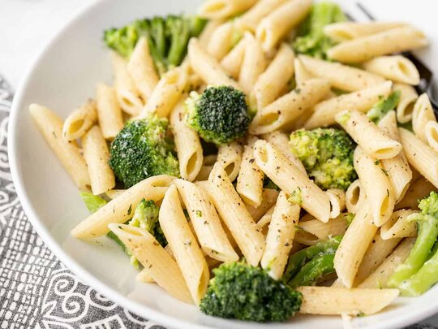

Broccoli Pasta Salad

This is a very unique broccoli pasta salad recipe that will definitely make you prepare the best broccoli pasta salad ever.
Ingredients
- 1 (8 ounce) package linguine pasta
- 1 (12 ounce) bag broccoli florets, cut into bite-size pieces
- ¼ cup olive oil
- 4 teaspoons minced garlic
- ½ teaspoon red pepper flakes
- ½ cup finely shredded Romano cheese
- 2 tablespoons finely chopped fresh flat-leaf parsley
- ¼ teaspoon ground black pepper
- Salt to taste
Steps
- Bring a large pot of lightly salted water to a boil; cook the linguine at a boil until tender yet firm to the bite, about 11 minutes; drain and return to pot.
- Place a steamer insert into a saucepan and fill with water to just below the bottom of the steamer. Bring water to a boil. Add broccoli, cover, and steam until tender, 3 to 5 minutes.
- Heat olive oil in a small saucepan over medium heat; cook and stir garlic and red pepper flakes until garlic is fragrant, 1 to 3 minutes. Add garlic mixture and broccoli to linguine; gently toss to coat. Add Romano cheese, parsley, black pepper, and salt; toss to combine.